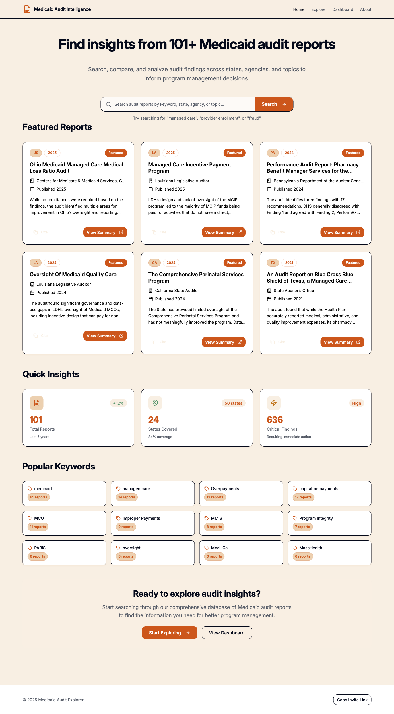
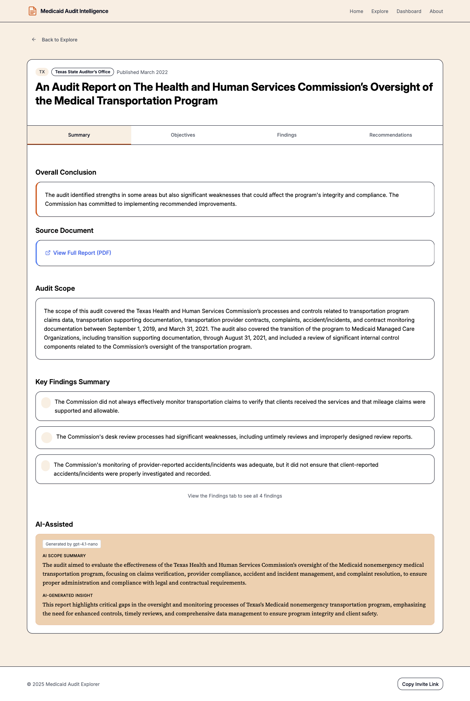
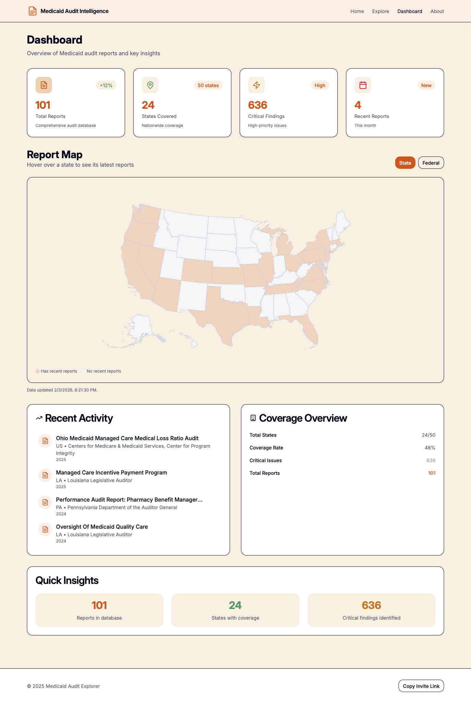

A case study on automating document discovery and extraction for government auditors
The Problem
There are thousands of Medicaid audit reports published each year. Audit standards ensure consistent information appears in each report like objectives, findings, and recommendations, but how that information gets presented varies wildly across states and audit shops. Different layouts, one or two-column text, text boxes scattered throughout, varying levels of detail. It makes it hard to get a comprehensive picture of what's actually out there.
Think about the institutional knowledge buried in these documents. Auditors across the country have spent countless hours reviewing criteria, examining evidence, and drawing conclusions about how one of the nation's largest government programs is being administered. But the inconsistent formats make it nearly impossible to search, compare, or reference that work easily.
When I led my first Medicaid Managed Care audit, I sent a team member a list of state and federal audit sites to manually search for reports published in the last 6 years examining the same kind of financial processes we planned to review. It probably took a full day just to search each site, read the objectives, scope, findings, and recommendations, and decide whether to download each report. Then another day to actually read the reports, extract information useful, and have me review it.
That's two days of professional time to answer a question like: What have other auditors found when they looked at eligibility determinations?
The Solution
Using AI tools like Replit for development and OpenAI LLMs for extraction, I built a system that automatically discovers, extracts, and organizes Medicaid audit findings from publicly available websites. The result is medicaidaudit.org, a searchable library where you can filter reports by state, agency, year, or keyword, with everything linked back to the original source documents.
The library currently contains [111] reports spanning [5] years from [XX] agencies. Each report is broken down into structured data: objectives, scope, findings, and recommendations, fields that auditors actually care about when planning engagements or assessing risk. It also includes LLM generated insights or take home points that I experimented with to explore how LLMs might think about building on the reported information.


This same approach works for any document-heavy domain where valuable information sits locked inside PDFs scattered across shared drives. Policy reports, contracts, grant documentation, regulatory guidance—if you have a pile of PDFs that people can't easily search, this pattern applies.
How It Works
The system has three main stages: discovery, extraction, and presentation.
Discovery
Not every PDF on a state auditor's website is a Medicaid performance audit. Many are annual financial reports, single audits, or unrelated engagements. The first challenge was finding the right documents.
I used the Google Custom Search API against a curated list of websites that publish Medicaid-related audit reports. This included state auditor offices, HHS-OIG, GAO, and similar sources. But search results still included plenty of irrelevant or nearly relevant documents.
To filter them, I added an AI classification step. Before processing a PDF, the system sends the first few pages to an LLM with a simple question: Is this a performance audit of a Medicaid program? Documents that pass get queued for extraction, the rest get skipped. This single step saved processing time and API costs to weed out unwanted reports.
Extraction
Once a report is identified as relevant, the system parses the PDF to extract text, then uses an LLM to populate a structured data model.
I defined a Pydantic schema for what I wanted to extract from each report:
class ReportData(BaseModel):
report_title: str = Field(
...,
description="Exact full report title in Title Case; no quotes, abbreviations, or report numbers."
)
audit_organization: str = Field(
...,
description="Full legal name of the auditing organization. No abbreviations or acronyms."
)
state: str = Field(
...,
description="US state code (e.g., 'NY', 'CA'). Use 'US' for federal agencies."
)
objectives: List[str] = Field(
[],
description="List of distinct audit objective texts. Each objective should be a separate string; no numbering or labels."
)
findings: List[str] = Field(
[],
description="List of distinct audit finding texts. No 'Finding 1:' prefixes, numbering, or headers."
)
recommendations: List[str] = Field(
[],
description="List of distinct audit recommendation texts. No numbering or headers."
)
extracted_keywords: List[str] = Field(
[],
description="Relevant keywords extracted from the report content"
)
# ... additional fields for dates, scope, AI-generated summariesThe LLM's job is to read the document and fill in these fields. This is where "context engineering" matters most, the prompt needs to be specific enough that the model extracts what's actually in the document and short enough to not confuse or overload the lightwieght model.
# Prepare the system prompt
system_prompt = """
You are an AI assistant specialized in extracting structured information from Medicaid audit reports.
Your task is to extract specific data points from the provided report text and format them according to the specified schema.
Focus on accuracy and be as detailed as possible. If some information is not present in the text, leave those fields empty or null.
"""
# Prepare the user prompt
user_prompt = f"""
Please extract structured data from the following Medicaid audit report text.
Here's the report text:
{pdf_text}
If the report text is cut off, please extract as much information as possible from the provided text.
"""Post-Processing
Raw extraction isn't enough. One of the unexpected challenges was keyword normalization. Different states use different terminology for the same concepts:
- "Eligibility determination" vs. "eligibility verification" vs. "member eligibility"
- "Managed care organization" vs. "MCO" vs. "health plan"
- "Overpayment" vs. "improper payment" vs. "payment error"
Without normalization, the search and filtering features become much less useful. A user searching for "eligibility" findings wouldn't see reports tagged with "member enrollment." I built a keyword mapping system that consolidates variations into canonical terms, which required manual review of the LLM-generated keywords to identify patterns.
Presentation
The frontend is a React application with faceted search—users can filter by state, agency, publication year, or theme. It was built by Replit's Agent coding model based on the data stored in the database. Each report has a detail page showing the extracted objectives, findings, and recommendations, with a link back to the original PDF. There's also a geographic dashboard showing aggregate statistics across the full dataset.


What I Learned
PDF parsing is messy, but LLMs handle it well. Even with inconsistent layouts, text boxes, and multi-column formats, the extraction worked better than I expected. For cleanly formatted PDFs, even small, cheap models (like GPT-5-nano) reliably pick out the right information. I think I benefited form the fact that these agencies make it part of their job to publish clean, informative reports. I focused on creating a well-defined schema and clear instructions, to identify and copy specific content.
Keyword normalization was harder than expected. I initially assumed the LLM would generate consistent keywords, but I was sorely mistaken. Building the mapping system required reviewing a lot of different keywords manually to identify synonyms and consolidate terms. This is ongoing work as I learn more about the overall Medicaid program and new reports surface new terminology.
AI classification was an surprise addition. The simple "is this a Medicaid performance audit?" filter eliminated a lot of false posititves identified in the search, saving costs of putting unwanted reports through the extraction pipeline.
API costs were not significant. 33 reports were processed with gpt-4.1-nano, almost 750k tokens, costing around $0.15. 78 reports were processed with gpt-5-nano, almost 2 million tokens, costing around $0.12.
Why This Matters
The goal isn't to replace auditors' judgment or automate audit planning, it's to remove the manual work that sits between a question and an answer. When institutional knowledge is scattered across hundreds of PDFs on dozens of websites, even simple questions become research projects at the scale of a program like Medicaid. A searchable database changes that. Planners can quickly see what's already been examined, what issues keep recurring, and how different states approach similar problems.
For someone starting a Medicaid engagement today, the question "What have others found?" no longer requires two days of searching. It's a few clicks away.
Try It Out
You can explore the tool at medicaidaudit.org.
The code for both the extraction pipeline and the frontend is available on GitHub:
- MedicaidReportAIMiner — The backend extraction and processing system
- MedicaidAuditIntelligence — The React frontend
If you work in Medicaid, government auditing, or program management and have feedback, I'd love to hear it.